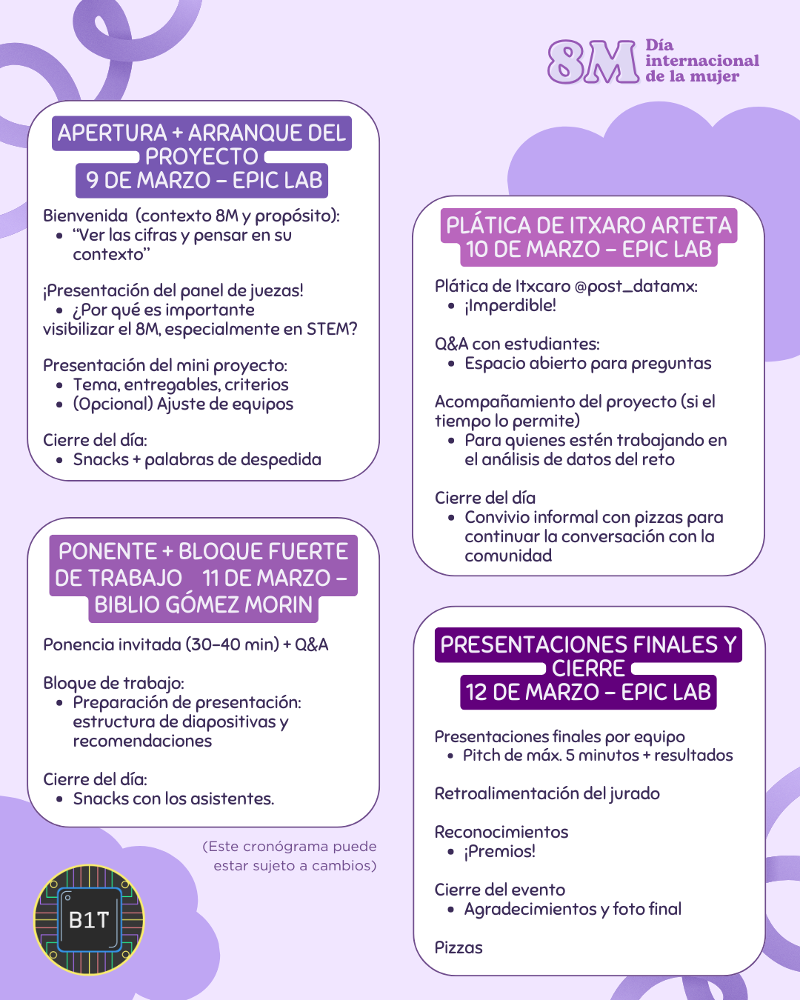

Buscar y entender datos de género nos ayuda a hablar por quienes históricamente han sido excluidas.
El objetivo del workshop es que entendamos que existe un sesgo de género en los datos, ya que aunque estos no mienten, se puede mentir con ellos. El registro así como las pláticas son completamente gratuitas y abiertas a toda la comunidad, si tienes alguna duda puedes consultar la página de preguntas frecuentes (FAQ) o contactarnos directamente en nuestra cuenta de instagram.
El Workshop se divide en dos partes: pláticas y un proyecto a entregar. Este último es opcional y no es necesario ir a todas las sesiones para poder entregarlo. Estaremos dando más detalles sobre el entregable en los días siguientes. El crónograma pensado para la semana del 9 al 12 es el siguiente:

Los entregables seran juzgados por un panel de juezas profesoras del ITAM a las cuales presentaremos en la bienvenida. Publicaremos los nombres de las juezas ese mismo día en esta página así como en nuestra cuenta de Instagram.